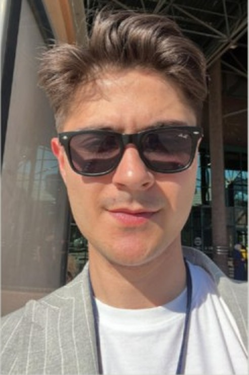

Elektrik-Elektronik Mühendisliği öğrencisi, yazılım geliştirici ve teknoloji meraklısıyım. Yapay zekâ, yazılım, elektronik ve gömülü sistemler üzerine projeler geliştiriyor; öğrendiklerimi gerçek dünyada çalışan sistemlere dönüştürmeye çalışıyorum.

Karabük Üniversitesi Elektrik-Elektronik Mühendisliği öğrencisiyim. Elektronik ve mühendislik disiplinini yazılım ve yapay zekâ ile birleştirerek kendimi çok yönlü bir mühendis olarak geliştirmeye çalışıyorum.
Python, C#, SQL ve farklı yazılım teknolojileriyle projeler geliştiriyor; yapay zekâ destekli uygulamalar, otomasyon sistemleri ve gömülü sistemler üzerine çalışıyorum. Benim için bir teknolojiyi yalnızca kullanmak değil, nasıl çalıştığını anlamak ve sıfırdan inşa edebilmek daha önemli.
Mühendisliğin yanında satranç, müzik, çizim ve spor gibi farklı alanlarla da ilgileniyorum. Satrançtan edindiğim stratejik düşünceyi ve problem çözme yaklaşımını mühendislik çalışmalarımda da kullanıyorum.
Hedefim; elektroniği, yazılımı ve yapay zekâyı bir araya getirerek geleceğin teknolojilerini geliştiren, sürekli öğrenen ve üreten bir mühendis olmak.
Yapay zeka asistanından finans paneline kadar geliştirdiğim güncel projelerden bir seçki.